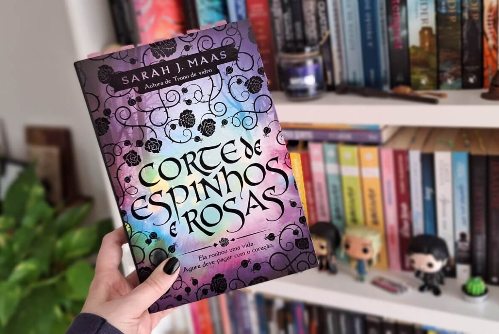
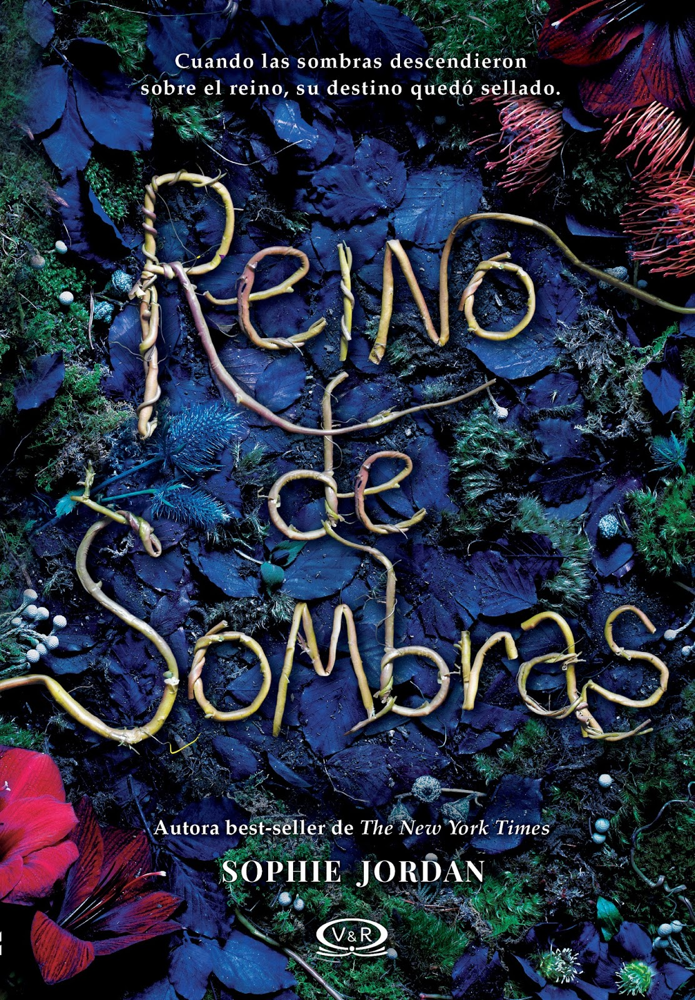
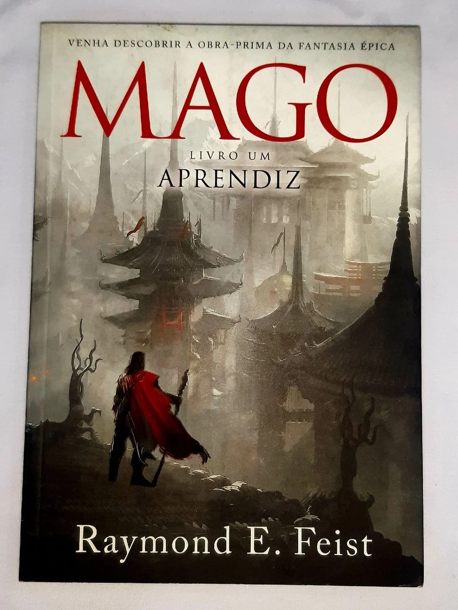
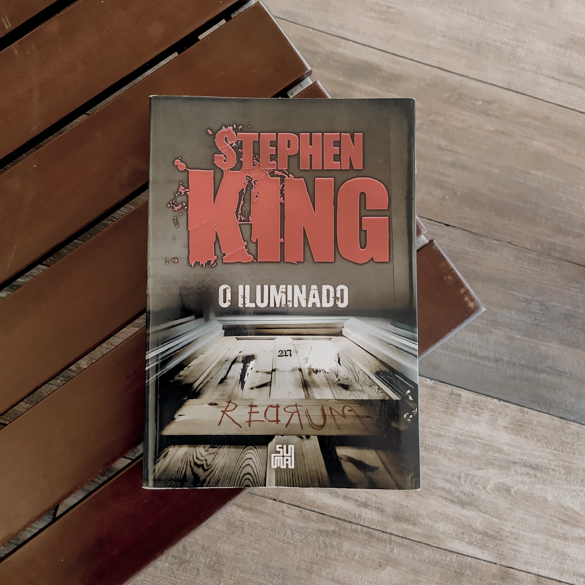
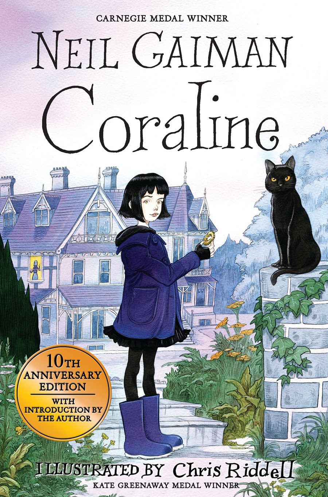

Dicas de Leitura
Fantasia
"Corte de Espinhos e Rosas" por Sarah J. Maas

"O Reino das Sombras" por Sophie Jordan

"O Mago" por Raymond E. Feist

Terror
"O Iluminado" por Stephen King

"Coraline" por Neil Gaiman

Para mais dicas como essas, cadastre-se no nosso site!!